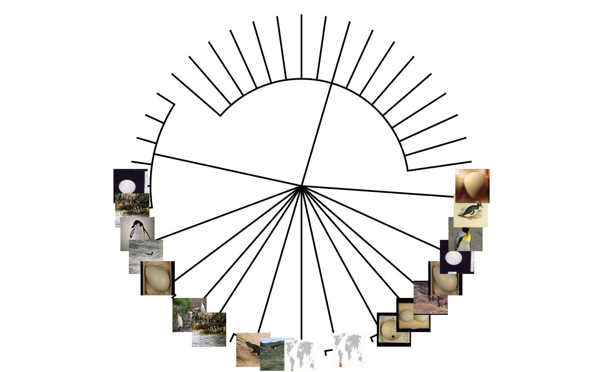
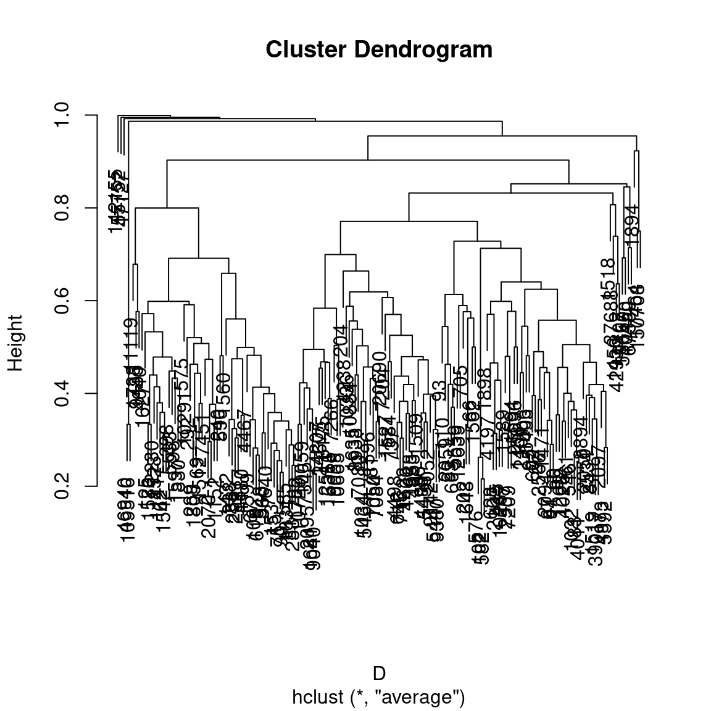
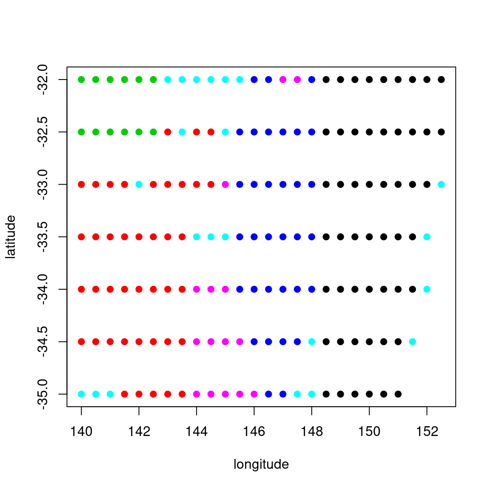
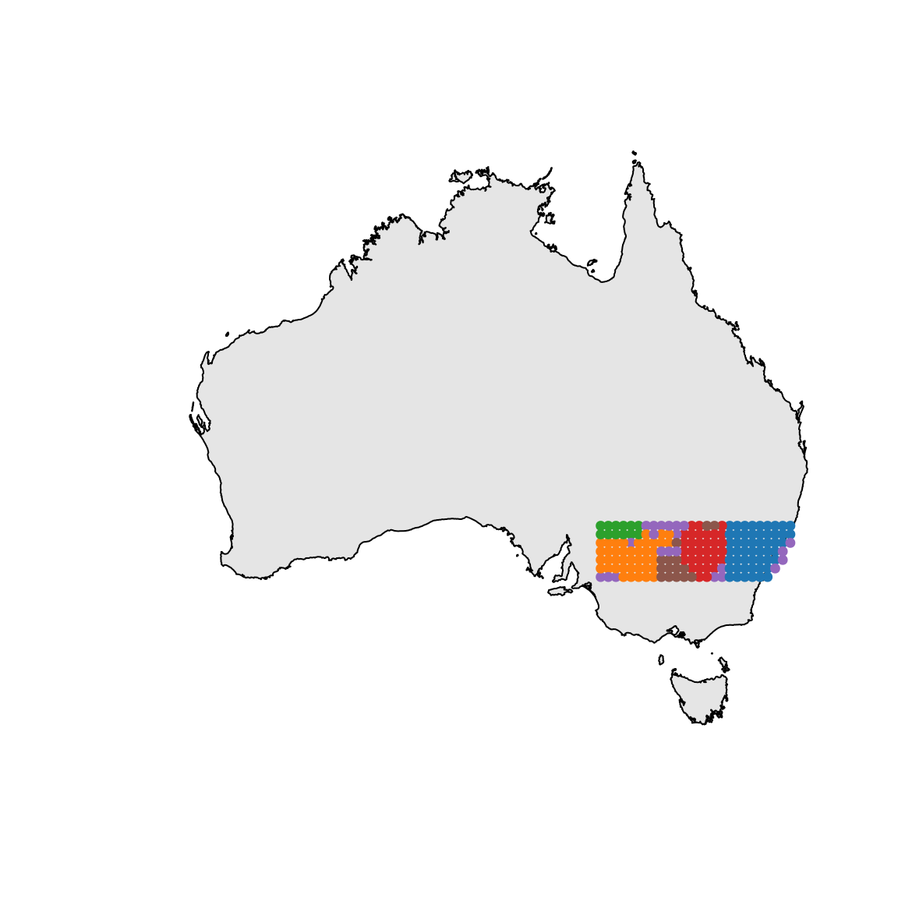

ALA4R
The Atlas of Living Australia (ALA) provides tools to enable users of biodiversity information to find, access, combine and visualise data on Australian plants and animals; these have been made available from http://www.ala.org.au/. Here we provide a subset of the tools to be directly used within R.
ALA4R enables the R community to directly access data and resources hosted by the ALA.
Installing ALA4R
Windows
In R:
Stable version from CRAN:
Or the development version from GitHub:
You may see a warning about the Rtools package: you don’t need to install this. You may also be asked about a location for the R.cache directory — choose whatever you prefer here, ALA4R does not use R.cache.
If you see an error about a missing package, you will need to install it manually, e.g.:
and then try installing ALA4R again.
If you wish to use the data.table package for potentially faster loading of data matrices (optional), also do:
Customizing
Various aspects of the ALA4R package can be customized.
Caching
ALA4R can cache most results to local files. This means that if the same code is run multiple times, the second and subsequent iterations will be faster. This will also reduce load on the ALA servers.
By default, this caching is session-based, meaning that the local files are stored in a temporary directory that is automatically deleted when the R session is ended. This behaviour can be altered so that caching is permanent, by setting the caching directory to a non-temporary location. For example, under Windows, use something like:
or for Linux:
Note that this directory must exist (you need to create it yourself).
All results will be stored in that cache directory and will be used from one session to the next. They won’t be re-downloaded from the server unless the user specifically deletes those files or changes the caching setting to “refresh”.
If you change the cache_directory to a permanent location, you may wish to add something like this to your .Rprofile file, so that it happens automatically each time the ALA4R package is loaded:
setHook(packageEvent("ALA4R", "attach"), function(...) ala_config(cache_directory=file.path("~","mydata","ala_cache")))Caching can also be turned off entirely by:
or set to “refresh”, meaning that the cached results will re-downloaded from the ALA servers and the cache updated. (This will happen for as long as caching is set to “refresh” — so you may wish to switch back to normal “on” caching behaviour once you have updated your cache with the data you are working on).
User-agent string
Each request to the ALA servers is accompanied by a “user-agent” string that identifies the software making the request. This is a standard behaviour used by web browsers as well. The user-agent identifies the user requests to the ALA, helping the ALA to adapt and enhance the services that it provides. By default, the ALA4R user-agent string is set to “ALA4R” plus the ALA4R version number (e.g. “ALA4R 1.5.2”).
NO personal identification information is sent. You can see all configuration settings, including the the user-agent string that is being used, with the command:
Debugging
If things aren’t working as expected, more detail (particularly about web requests and caching behaviour) can be obtained by setting the verbose configuration option:
Setting the download reason
ALA requires that you provide a reason when downloading occurrence data (via the ALA4R occurrences() function). You can provide this as a parameter directly to each call of occurrences(), or you can set it once per session using:
(See ala_reasons() for valid download reasons)
Example usage
First, check that we have some additional packages that we’ll use in the examples, and install them if necessary.
to_install <- c("plyr","jpeg","phytools","ape","vegan","mgcv","geosphere","maps","mapdata","maptools")
to_install <- to_install[!sapply(to_install,requireNamespace,quietly=TRUE)]
if(length(to_install)>0) install.packages(to_install,repos="http://cran.us.r-project.org")We’ll use the plyr package throughout these examples, so load that now:
Example 1: Name searching and taxonomic trees
We want to look at the taxonomic tree of penguins, but we don’t know what the correct scientific name is, so let’s search for it:
## name rank
## 1 SPHENISCIFORMES order
## 2 SPHENISCIDAE family
## 3 Pygoscelis adeliae species
## 4 Eudyptes chrysolophus species
## 5 Megadyptes waitaha species
## 6 Pygoscelis adeliae species
## 7 Spheniscus magellanicus species
## 8 Spheniscus magellanicus species
## 9 Ixodes eudyptidis species
## 10 Aptenodytes patagonicus species
## commonName
## 1 Penguins
## 2 Penguins
## 3 Adelie Penguin, Adélie Penguin
## 4 Macaroni Penguin, Royal Penguin, Crested Penguin
## 5 Waitaha Penguin
## 6 Adelie Penguin
## 7 Magellanic Penguin
## 8 Magellanic Penguin
## 9 Penguin Tick
## 10 King PenguinAnd we can see that penguins correspond to the family Spheniscidae. There are (at the time of writing this vignette) two results: one “Spheniscidae” and the other “SPHENISCIDAE” (identical except all upper case). The first comes from the New Zealand Organism Register and represents extinct penguins. We want the other one (“SPHENISCIDAE”). Now we can download the taxonomic data (note that the search is case-sensitive):
tx <- taxinfo_download("rk_family:SPHENISCIDAE",fields=c("guid","rk_genus","scientificName","rank"))
tx <- tx[tx$rank %in% c("species","subspecies"),] ## restrict to species and subspeciesWe can make a taxonomic tree plot using the phytools package:
## as.phylo requires the taxonomic columns to be factors
temp <- colwise(factor, c("genus","scientificName"))(tx)
## create phylo object of Scientific.Name nested within Genus
ax <- as.phylo(~genus/scientificName,data=temp)
plotTree(ax,type="fan",fsize=0.7) ## plot it
We can also plot the tree with images of the different penguin species. We’ll first extract a species profile for each species identifier (guid) in our results:
And for each of those species profiles, download the thumbnail image and store it in our data cache:
imfiles <- sapply(s$thumbnailUrl,function(z){
ifelse(!is.na(z),ALA4R:::cached_get(z,type="binary_filename"),"")
})And finally, plot the tree:
plotTree(ax,type="fan",ftype="off") ## plot tree without labels
tr <- get("last_plot.phylo",envir = .PlotPhyloEnv) ## get the tree plot object
## add each image
library(jpeg)
for (k in which(nchar(imfiles)>0))
rasterImage(readJPEG(imfiles[k]),tr$xx[k]-1/10,tr$yy[k]-1/10,tr$xx[k]+1/10,tr$yy[k]+1/10)
Example 2: Area report: what listed species exist in a given area?
First download an example shapefile of South Australian conservation reserve boundaries: see http://data.sa.gov.au/dataset/conservation-reserve-boundaries. We use the ALA4R’s caching mechanism here, but you could equally download this file directly.
library(maptools)
shape_filename <- ALA4R:::cached_get("https://data.environment.sa.gov.au/NatureMaps/Documents/CONSERVATION_Npwsa_Reserves_shp.zip", type="binary_filename")
unzip(shape_filename,exdir=ala_config()$cache_directory) ## unzip this file
shape <- readShapePoly(file.path(ala_config()$cache_directory, "CONSERVATION_NpwsaReserves.shp"))
## extract just the Morialta Conservation Park polygon
shape <- shape[shape$RESNAME=="Morialta",]We could create the WKT string using the rgeos library:
Unfortunately, in this instance this gives a WKT string that is too long and won’t be accepted by the ALA web service. Instead, let’s construct the WKT string directly, which gives us a little more control over its format:
lonlat <- shape@polygons[[1]]@Polygons[[1]]@coords ## extract the polygon coordinates
## extract the convex hull of the polygon to reduce the length of the WKT string
temp <- chull(lonlat)
lonlat <- lonlat[c(temp,temp[1]),]
## create WKT string
wkt <- paste("POLYGON((",paste(apply(lonlat,1,function(z) paste(z,collapse=" ")),collapse=","),"))",sep="")Now extract the species list in this polygon, filtering to only include those with a conservation status:
## taxonConceptLsid
## 1 urn:lsid:biodiversity.org.au:afd.taxon:72ca8d75-71da-4751-a5cf-aa07ac3869f7
## 2 urn:lsid:biodiversity.org.au:afd.taxon:dc90876f-838c-4686-a353-75a3e25d2e1b
## 3 http://id.biodiversity.org.au/node/apni/2896820
## 4 urn:lsid:biodiversity.org.au:afd.taxon:364d0d4b-e986-45af-b5da-bb372a3ad39c
## 5 http://id.biodiversity.org.au/node/apni/8489762
## 6 http://id.biodiversity.org.au/node/apni/2919415
## 7 http://id.biodiversity.org.au/node/apni/2891764
## 8 urn:lsid:biodiversity.org.au:afd.taxon:01502fec-31f9-4e83-b827-5de8b113fb5f
## 9 urn:lsid:biodiversity.org.au:afd.taxon:31450840-9baf-4581-a5db-ab50ee5a8f93
## 10 http://id.biodiversity.org.au/name/apni/106077
## 11 http://id.biodiversity.org.au/node/apni/2918729
## 12 urn:lsid:biodiversity.org.au:afd.taxon:00b1b9a2-70c9-45be-8019-9c7fd755afc8
## 13 urn:lsid:biodiversity.org.au:afd.taxon:a581c303-95b9-4e2f-8fdc-103e394dd85f
## 14 urn:lsid:biodiversity.org.au:afd.taxon:290cabdd-2bd5-42a6-adea-f22341edea71
## 15 urn:lsid:biodiversity.org.au:afd.taxon:3293a0b2-c691-4e3e-b8ed-c639a24d0da5
## 16 http://id.biodiversity.org.au/node/apni/2899781
## 17 http://id.biodiversity.org.au/node/apni/2916843
## 18 http://id.biodiversity.org.au/node/apni/2919200
## 19 http://id.biodiversity.org.au/node/apni/2898209
## 20 http://id.biodiversity.org.au/node/apni/2886348
## speciesName
## 1 Calyptorhynchus (Zanda) funereus
## 2 Hylacola pyrrhopygia parkeri
## 3 Eucalyptus fasciculosa
## 4 Falco (Hierofalco) peregrinus
## 5 Spyridium spathulatum
## 6 Anthocercis angustifolia
## 7 Austrostipa multispiculis
## 8 Isoodon obesulus obesulus
## 9 Egernia cunninghami
## 10 Prasophyllum pruinosum
## 11 Correa glabra var. leucoclada
## 12 Trichosurus vulpecula
## 13 Antechinus flavipes
## 14 Pseudophryne bibronii
## 15 Falcunculus frontatus
## 16 Eucalyptus viminalis subsp. viminalis
## 17 Todea barbara
## 18 Acacia iteaphylla
## 19 Prasophyllum pallidum
## 20 Poa umbricola
## scientificNameAuthorship rank kingdom phylum
## 1 (Shaw, 1794) species ANIMALIA CHORDATA
## 2 (Schodde & Mason, 1999) subspecies ANIMALIA CHORDATA
## 3 F.Muell. species Plantae Charophyta
## 4 Tunstall, 1771 species ANIMALIA CHORDATA
## 5 (F.Muell.) Benth. species Plantae Charophyta
## 6 F.Muell. species Plantae Charophyta
## 7 (J.M.Black) S.W.L.Jacobs & J.Everett species Plantae Charophyta
## 8 (Shaw, 1797) subspecies ANIMALIA CHORDATA
## 9 (Gray, 1832) species ANIMALIA CHORDATA
## 10 species
## 11 (Lindl.) Paul G.Wilson variety Plantae Charophyta
## 12 (Kerr, 1792) species ANIMALIA CHORDATA
## 13 (Waterhouse, 1838) species ANIMALIA CHORDATA
## 14 Günther, 1858 species ANIMALIA CHORDATA
## 15 (Latham, 1801) species ANIMALIA CHORDATA
## 16 subspecies Plantae Charophyta
## 17 (L.) T.Moore species Plantae Charophyta
## 18 F.Muell. ex Benth. species Plantae Charophyta
## 19 Nicholls species Plantae Charophyta
## 20 Vickery species Plantae Charophyta
## class order family genus
## 1 AVES PSITTACIFORMES CACATUIDAE Calyptorhynchus
## 2 AVES PASSERIFORMES ACANTHIZIDAE Hylacola
## 3 Equisetopsida Myrtales Myrtaceae Eucalyptus
## 4 AVES FALCONIFORMES FALCONIDAE Falco
## 5 Equisetopsida Rosales Rhamnaceae Spyridium
## 6 Equisetopsida Solanales Solanaceae Anthocercis
## 7 Equisetopsida Poales Poaceae Austrostipa
## 8 MAMMALIA PERAMELEMORPHIA PERAMELIDAE Isoodon
## 9 REPTILIA SQUAMATA SCINCIDAE Egernia
## 10
## 11 Equisetopsida Sapindales Rutaceae Correa
## 12 MAMMALIA DIPROTODONTIA PHALANGERIDAE Trichosurus
## 13 MAMMALIA DASYUROMORPHIA DASYURIDAE Antechinus
## 14 AMPHIBIA ANURA MYOBATRACHIDAE Pseudophryne
## 15 AVES PASSERIFORMES PACHYCEPHALIDAE Falcunculus
## 16 Equisetopsida Myrtales Myrtaceae Eucalyptus
## 17 Equisetopsida Osmundales Osmundaceae Todea
## 18 Equisetopsida Fabales Fabaceae Acacia
## 19 Equisetopsida Asparagales Orchidaceae Prasophyllum
## 20 Equisetopsida Poales Poaceae Poa
## commonName occurrenceCount
## 1 Yellow-Tailed Black-Cockatoo 356
## 2 58
## 3 Hill Gum 54
## 4 Peregrine Falcon 53
## 5 Spoon-Leaf Spyridium 39
## 6 Narrow-Leaf Ray-Flower 30
## 7 Many-Flowered Spear-Grass 21
## 8 21
## 9 Cunningham's Skink 19
## 10 14
## 11 Rock Correa 14
## 12 Australian Brushtail Possum 14
## 13 Yellow-Footed Antechinus 14
## 14 Brown Toadlet 12
## 15 Crested Shrike-Tit 11
## 16 Ribbon Gum 9
## 17 Hard Todea 8
## 18 Flinders Range Wattle 8
## 19 7
## 20 Shade Tussock-Grass 6Example 3: Quality assertions
Data quality assertions are a suite of fields that are the result of a set of tests peformed on ALA data. Download occurrence data for the golden bowerbird:
## number of original names: 7
## number of taxonomically corrected names: 1
## number of observation records: 1580
## number of assertions listed: 18 -- ones with flagged issues are listed below
## invalidCollectionDate: 110 records
## incompleteCollectionDate: 150 records
## firstOfCentury: 8 records
## detectedOutlier: 4 records -- considered fatal
## uncertaintyRangeMismatch: 17 records
## firstOfYear: 39 records
## altitudeInFeet: 2 records
## geodeticDatumAssumedWgs84: 780 records
## decimalLatLongConverted: 5 records
## unrecognisedOccurrenceStatus: 1 records
## coordinatePrecisionMismatch: 55 records
## countryInferredByCoordinates: 483 records
## assumedPresentOccurrenceStatus: 689 records
## unrecognizedGeodeticDatum: 105 records
## inferredDuplicateRecord: 101 records
## stateCoordinateMismatch: 1 records
## habitatMismatch: 14 records -- considered fatal
## firstOfMonth: 97 recordsYou can see that some of the points have assertions that are considered “fatal” (i.e. the occurrence record in question is unlikely to be suitable for subsequent analysis). We can use the occurrences_plot function to create a PDF file with a plot of this data, showing the points with fatal assertions (this will create an “Rplots.pdf” file in your working directory; not run here):
There are many other ways of producing spatial plots in R. The leaflet package provides a simple method of producing browser-based maps iwth panning, zooming, and background layers:
library(leaflet)
## drop any records with missing lat/lon values
x$data <- x$data[!is.na(x$data$longitude) & !is.na(x$data$latitude),]
xa <- check_assertions(x)
## columns of x corresponding to a fatal assertion
x_afcols <- which(names(x$data) %in% xa$occurColnames[xa$fatal])
## rows of x that have a fatal assertion
x_afrows <- apply(x$data[,x_afcols],1,any)
## which fatal assertions are present in this data?
these_assertions <- names(x$data)[x_afcols]
## make a link to th web page for each occurrence
popup_link <- paste0("<a href=\"http://biocache.ala.org.au/occurrences/",x$data$id,"\">Link to occurrence record</a>")
## colour palette
pal <- c(sub("FF$","",heat.colors(length(these_assertions))))
## map each data row to colour, depending on its assertions
marker_colour <- rep("#00FF00",nrow(x$data))
for (k in 1:length(these_assertions)) marker_colour[x$data[,x_afcols[k]]] <- pal[k]
## blank map, with imagery background
m <- addProviderTiles(leaflet(),"Esri.WorldImagery")
## add markers
m <- addCircleMarkers(m,x$data$longitude,x$data$latitude,col=marker_colour,popup=popup_link)
print(m)Example 4: Community composition and turnover
Some extra packages needed here:
Define our area of interest as a transect running westwards from the Sydney region, and download the occurrences of legumes (Fabaceae; a large family of flowering plants) in this area:
wkt <- "POLYGON((152.5 -35,152.5 -32,140 -32,140 -35,152.5 -35))"
x <- occurrences(taxon="family:Fabaceae",wkt=wkt,qa="none",download_reason_id=10)
x <- x$data ## just take the data componentBin the locations into 0.5-degree grid cells:
Create a sites-by-species data frame. This could also be done with e.g. the reshape library or the table() function, or indeed directly from ALA4R’s species_by_site function. Note: this process inherently makes some strong assumptions about absences in the data.
## discard genus- and higher-level records
xsub <- x$rank %in% c("species","subspecies","variety","form","cultivar")
unames <- unique(x[xsub,]$scientificName) ## unique names
ull <- unique(x[xsub,c("longitude","latitude")])
xgridded <- matrix(NA,nrow=nrow(ull),ncol=length(unames))
for (uli in 1:nrow(ull)) {
lidx <- xsub & x$longitude==ull[uli,]$longitude & x$latitude==ull[uli,]$latitude
xgridded[uli,] <- as.numeric(unames %in% x[lidx,]$scientificName)
}
xgridded <- as.data.frame(xgridded)
names(xgridded) <- unames
xgridded <- cbind(ull,xgridded)Now we can start to examine the patterns in the data. Let’s plot richness as a function of longitude:
plot(xgridded$longitude,apply(xgridded[,-c(1:2)],1,sum),ylab="Richness",
xlab="Longitude",pch=20,col="grey25")
The number of species is highest at the eastern end of the transect (the Sydney/Blue Mountains area). This probably reflects both higher species richness as well as greater sampling effort in this area compared to the western end of the transect.
How does the community composition change along the transect? Calculate the dissimilarity between nearby grid cells as a function of along-transect position:
D <- vegdist(xgridded[,-c(1:2)],'bray') ## Bray-Curtis dissimilarity
Dm <- as.matrix(D) ## convert to a matrix object
## calculate geographic distance from longitude and latitude
Dll <- apply(xgridded[,1:2],1,function(z){distVincentySphere(z,xgridded[,1:2])})
closeidx <- Dll>0 & Dll<100e3 ## find grid cells within 100km of each other
## create a matrix of longitudes that matches the size of the pairwise-D matrices
temp <- matrix(xgridded$longitude,nrow=nrow(xgridded),ncol=nrow(xgridded))
## plot dissimilarity as a function of transect position
plot(temp[closeidx],Dm[closeidx],xlab="Longitude",ylab="Dissimilarity",pch=20,col="grey85")
## add smooth fit via gam()
fit <- gam(d~s(tp,k=7),data=data.frame(tp=temp[closeidx],d=Dm[closeidx]))
tpp <- seq(from=min(xgridded$longitude),to=max(xgridded$longitude),length.out=100)
fitp <- predict(fit,newdata=data.frame(tp=tpp))
lines(tpp,fitp,col=1)Clustering:

grp <- cutree(cl,20) ## extract group labels at the 20-group level
## coalesce small (outlier) groups into a single catch-all group
sing <- which(table(grp)<5)
grp[grp %in% sing] <- 21 ## put these in a new combined group
grp <- sapply(grp,function(z)which(unique(grp)==z)) ## renumber groups
## plot
with(xgridded,plot(longitude,latitude,pch=21,col=grp,bg=grp))
## or slightly nicer map plot
library(maps)
library(mapdata)
map("worldHires","Australia", xlim=c(105,155), ylim=c(-45,-10), col="gray90", fill=TRUE)
thiscol <- c("#1f77b4","#ff7f0e","#2ca02c","#d62728","#9467bd","#8c564b","#e377c2","#7f7f7f","#bcbd22","#17becf") ## colours for clusters
with(xgridded,points(longitude,latitude,pch=21,col=thiscol[grp],bg=thiscol[grp],cex=0.75))